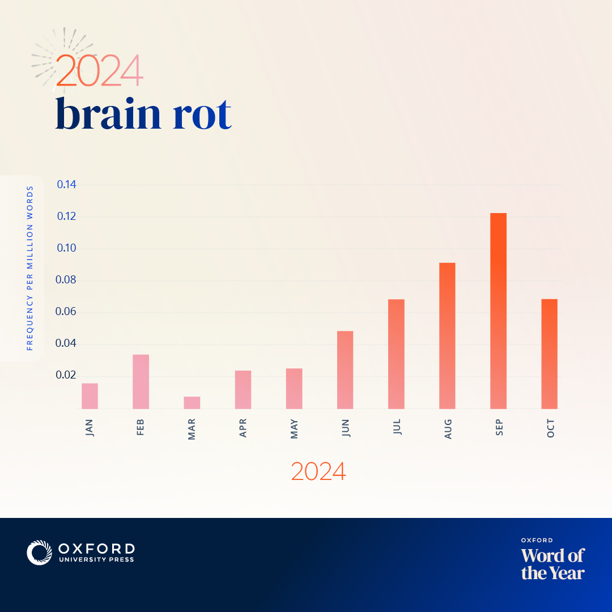

2024 年终总结
本博客正式启动于十一月 30 日，至今正好满一个月。这一个月很短暂，如果不是因为我的博客，这段时光绝对会如同过去的那些一个个“短暂”的时光片段一样，悄无声息地离去，不留下一丝痕迹。但是，幸而我在那时下定了开博的决心，这一个月的时间里，我没有再依赖电子游戏为我提供精神安慰品，在接连出现的未知领域中的探索已经占据了我绝大部分的可自由支配的精力。
我相信精力是现代人的稀缺品。这个时代不缺少信息，但是作为接受信息者的人却缺少从中挖掘有价值的知识和智慧的能力，这种能力的缺失带来大量无益的时间损耗，消磨着人们的精力。多数人选择停滞在舒适圈中，在无限循环的短视频里自我洗脑，在社交平台上变得轻浮且疯狂。这是一种精神上的自我阉割。现代人面临着一个日益趋紧的矛盾，一方面是信息的大爆炸，另一方面是面对过量信息时主体性的消失。这种主体性的消失，在行为上表现为“消遣”，陷入信息茧房，被投喂的信息牵着鼻子走；在技术上表现为媒介素养的低下，检索信息的能力的退化。但如果将这种迷失与退化全都怪罪到推荐算法的头上，也未免过于失当，这也不是看待信息技术的正常观念。推荐算法的存在并没有取代主动搜索，用户仍然可以有其他的选择。
私以为，现代人自己抛售掉了自己的主体性，以此交换停留在心理舒适圈的门票，自甘堕落为碎片式信息的附庸。
我自认为我自己是这个阉割浪潮下的幸存者。我可以骄傲地宣称，我从来不看短视频，我不关注微博客，因此，我很幸运地避免了沉迷于无聊的消遣之中，避免了精神上的慢性自杀。
我将这种消遣定义为慢性自杀绝非危言耸听。首先，读者可以自己尝试一下，针对你感兴趣的某个话题，撰写一篇完整的文章，看看你的遣词造句和逻辑架构；或者不必把文章真的写出来，只需要试试给它列出一个清晰、详尽的思维导图就可以。我认为这个方法是检测思维被碎片化信息侵蚀的程度最直接的手段。其次，找一个或几个你反对或者厌恶的观点，分条写下你的反驳，看看你的驳论逻辑性如何，针对的是观点还是观点的发表者，反驳的出发点是事实还是先验的道德、信仰或政治观点。我认为这个方法是检测思维是否平面化的最直接手段。最后，评估一下你做这些测试时的耐心，就能得知思维的广纳度——狭窄的思维往往表现为表达的弱逻辑性、认知的极端排他性和思想的不包容性。
我相信多数人得到的答案是令人绝望的。在信息材料无比充裕的今天，大众的检索能力和信息加工能力却日渐堕入贫困的荒原。物质上的贫困足以通过个人的努力和社会的扶助获得解决，精神上的贫困呢？对于普通人而言，离开舒适圈实际上无异于另一种自杀——有时候，人们可能就是需要一叶障目，就是需要偏见和歧视，才能维持心理的稳定性，才能维护社群认同，因此人们会选择性地忽略掉认知范围之外的事情，在这一过程中，社交媒体便承担了工具的角色。消遣的需求，反过来又刺激了低质内容的再生产扩大，造成了一个恶性循环。
诚然，短平快的媒体平台也存在为数众多的知识性内容生产者，他们对大众科普和启蒙的作用不可抹杀。但是，我想问的是，仅仅依赖时长仅有数分钟（甚至更短）的媒介，创作者能够呈现多少内容？如何证明内容的可靠性？极短的时长能否容纳严谨的论述？创作的内容能否体系化，或者观众在观看时能否遵循一个系统性的流程？合格的科普，不仅在于清楚无误地告诉受众“是什么”，还应当教会受众“为什么”。后者作为一整套科学的思维方式具有更加重大的意义，如果科普不能普及科学思维，遑论提升公众的素养。很显然媒介素养的缺失是迫在眉睫的事情。
今年十二月 2 日，牛津大学宣布了今年的年度词汇：brain rot ——脑腐。[1]这是一个很形象的描述，长期沉溺于社交媒体的消遣中，人们的大脑已经锈蚀了。更关键的一点是，这是经过专家预选和民众投票得出的结果，证明人们已经开始注重沉迷消遣的不良现象，越来越多的人意识到，低质量的信息正逐渐腐蚀着他们的心智。

但是，这将是一个漫长的过程。媒体平台的封闭性和强大的粘性阻碍了有价值信息的流通，在确立了相对的用户规模和信息垄断优势后，平台对商业利益的追求又导致了平台内容质量的劣化。加拿大作家科利·多克托罗（Cory Doctorow）生造了一个词语生动通俗地描述这一现象：enshittification。该词词根为“shit”，词缀“en-”表示“使……具有”、“赋予”，“-ification”表示“变化过程”，合起来即“屎化”。多克托罗在《金融时报》的一篇专栏中提出：“万物终归于屎（enshittification）。”“一个接一个，每一条约束[屎化的条条框框]都被侵蚀，使得屎质性的（enshittificatory）大潮势不可挡，引领我们走进新屎代（enshittocene）。”[2]
幽默的话语预示着同样幽默的荒诞未来。信息时代的人失去了对信息的控制，何其可悲。在人类历史上数次信息革命中，这是唯一一次，信息的传播和富足带来愚昧和撕裂。在过去，思想家们认为，导致愚昧的是精英阶层对传播介质的垄断，但今天，垄断消失后，我们发现事情变了，导致愚昧的是愚昧者自己的素养。要想斩断这个循环，需要诸媒体工作者和内容创作者，以及教育从业者的共同努力。
《每日明》的任务就是承担我个人的思考，驱使我寻找问题、完善知识体系、深化思考。我很高兴愿意阅读本博客的读者一同参与进来，一起探讨各类问题，共同提高，为达成斩断循环的目标添砖加瓦。
博客年度总结
虽然博客工作的时间仅仅覆盖了一年的十二分之一，但是还是请允许我依照惯例做一点“总结”。
内容更新
今年本博客总计更新了 6 篇文章（本篇不计），其中有 4 篇公告，1 篇翻译；有 2 篇文章是长文。
原创内容：
虽然第一篇文章被我归入“博客公告”分类下，但是，作为我建设多语言站点的经验记录，我认为它有资格位列其中。第二篇是我迄今为止最满意的一篇文章 （因为你就写了两篇原创文章啊喂） ，今后的长篇深度文章大多也会遵循这个写作范式。
另外，已经发布的文章、旧文章的内容还是可能会被改动，尤其是刚刚发布的文章，这是因为我发布前考虑不周、发布后才打马后炮的不良习惯导致的，还望海涵……但是我向各位保证，这些修改通常情况下只是遣词造句的修订，如果涉及到内容的实质性改变，我会在文章相应位置做好显眼的标记。
站务回顾
多语言项目
虽然我已经找到了多语言站点的构建方法，但是，由于站点频繁面临配置变更，跨语言同步更改变成了一件十分繁琐的事情；其次，原本的其他语言版本的文章是由谷歌翻译完成并由我后期校对的，但尽管如此，使用机器翻译还是一件非常缺乏诚意的事情，所以我暂停了其他语言的更新，直到我能够腾出手来完成现有文章的翻译。
另外，由于使用不同语言的读者的文化和社会生活差异，有些文章可能会成为某一语言的“独家”内容并不再给出译文。如果您有兴趣，可以协助我们翻译！出于减轻维护压力的需要，多语言内容重新上线后，博文一般情况下将不再同步更新。
目前我正在编写辅助维护多语言站点的工具，一个不完善的 demo 已经上传至 GitHub。
视觉改动
改变了一些默认的图片。网页默认横幅图片来自 Microsoft 365 图像集。网站的图标则是我随手涂鸦的……不必在意。
技术调整
加入了 giscus 评论插件，该插件基于 GitHub Discussion 运作。该插件优点是不需要服务端架设，无需额外注册第三方云端服务，缺点是仅有 GitHub 用户可以发表评论，且不支持匿名功能。
添加了 RSS 订阅功能。
增加了文章时效性提示，通过 JavaScript 注入实现。如果文章发布于180天前则会在页首显示提示信息。页脚版权信息格式稍作修改，并添加了网站运行总时长，从本站第一篇文章发布起开始计时，原理是将起始时间戳与当前时间戳作差后转化为人类可读时间格式。
2025 展望
一项庞大的系列计划正在酝酿之中……原本计划于 2024 年圣诞节发表，但是很可惜由于内容的广度和深度都超过了我的预期，所以工期被迫大幅延长，不过慢工出细活，我有自信能够拿出震撼各位的作品！
《中国探路者》系列的翻译仍将继续，未来还会扩大范围，翻译其他有价值的文章。
几项长篇文章正在酝酿中，它们的主题分别是——
多邻国的启示……（已放弃）- 李约瑟之问
国际数学和科学研究趋势测试（TIMSS）……（已放弃）
上述放弃的文章计划已并入另一篇文章：
关于创造力的随想：教育模式给我们带来了什么
主题如此，不止主题！《每日明》还希望能够将讨论的范围继续深化，以求一窥世界运转的本质，给读者带来更具有普遍性意义的启发。
一项新的专题已经提上日程：读书分享。优质的书籍是通往智慧的阶梯的牢固砖石，我希望能和大家分享阅读中感悟的每一点每一滴。
写在最后
很可惜，由于博客新生不久，内容单薄，本年度的总结只能这样草草了事，实在是心有不甘；来年会接续努力，为大家提供更丰富、更具深度的内容！
参考
- ‘Brain rot’ named Oxford Word of the Year 2024. Oxford University Press. Last accessed: Dec., 31, 2024. https://corp.oup.com/news/brain-rot-named-oxford-word-of-the-year-2024/ （英文） ↩
- ‘Enshittification’ is coming for absolutely everything. Financial Times. 🔐https://www.ft.com/content/6fb1602d-a08b-4a8c-bac0-047b7d64aba5. （网页存档，互联网档案馆） （英文） ↩